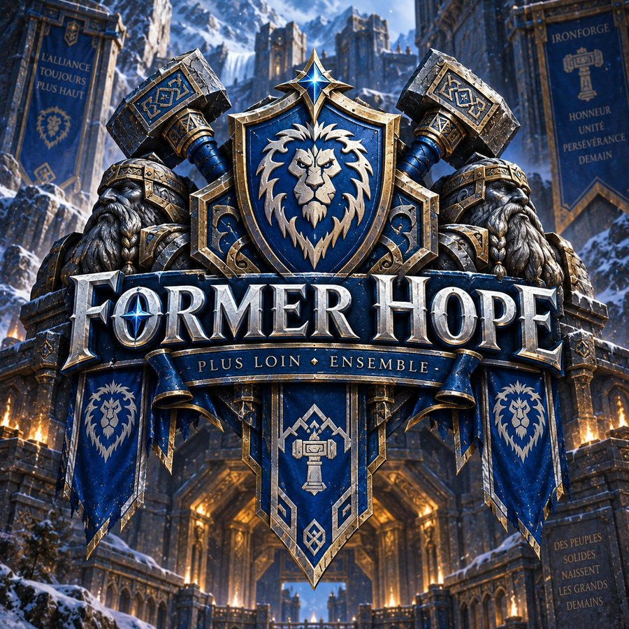

Fondée en 2026 · Alliance · WOW FOREVER
Former Hope Unis par l'aventure, guidés par l'envie.
Une guilde stable d'adultes qui vise à clean chaque patch sans transformer le jeu en second travail. On progresse, on rigole, et on s’amuse. Notre objectif : un groupe soudé qui avance comme une vraie équipe.
La guilde
Bienvenue chez Former Hope, une guilde PvE chill qui souhaite avant tout construire une communauté soudée, mature et agréable, tout en avançant sérieusement dans le contenu PvE.
Former Hope est née d’un noyau de joueurs venus de serveurs privés, habitués à clean le contenu et à tenir bon là où d’autres abandonnent. Cette endurance, cette stabilité, c’est ce qui nous définit. Nous rejoindre, c’est rejoindre une équipe qui ne lâche jamais.
Notre philosophie
Chez Former Hope, nous attachons une grande importance à trois valeurs essentielles : Respect • Entraide • Bonne humeur.
Nous voulons créer un environnement où chacun peut jouer, progresser, échanger et prendre du plaisir sans pression inutile.
On raide le mardi et le dimanche, de 21h00 à 00h00, heure de Paris. Présence attendue sur deux soirs minimum. Les potions, les flacons et les nourritures de raid sont fournis par la banque de guilde : tu viens avec ton stuff optimisé et ta bonne humeur.
En dehors du raid, on fait des rerolls, des donjons, de l’optimisation, et j’en passe, très souvent avec des soirées qui durent bien plus longtemps que prévu.
Ce qu'on attend
Connaître les tactiques avant le soir du raid, accepter les retours sans les prendre personnellement, et prévenir sur Discord quand tu ne peux pas venir. C'est tout. Le reste s'apprend en jeu.
Fiche
- Faction
- Alliance
- Serveur
- Inconnu pour l’instant
- Soirs de raid
- Mardi et dimanche
- Horaires
- 21h00 – 00h00
- Vocal
- Discord obligatoire